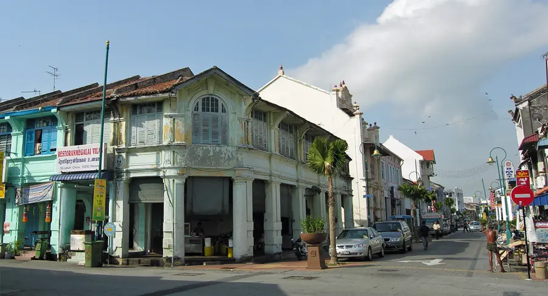
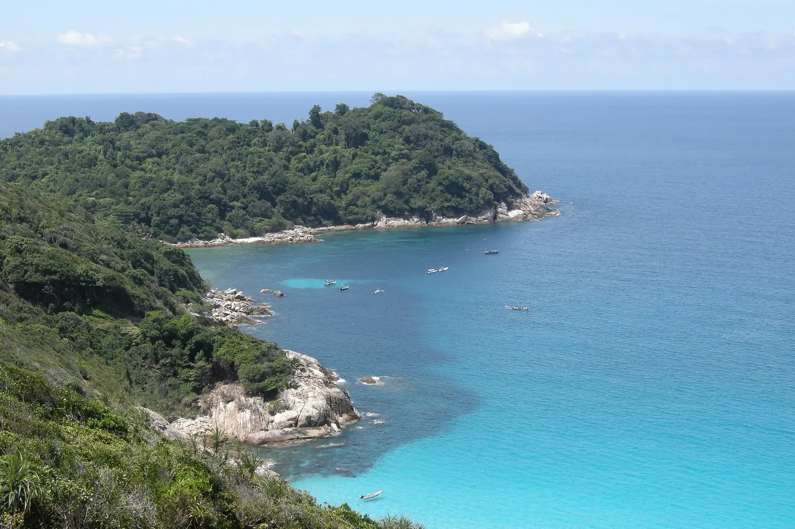

Malaysia · Seasonal Almanac · 2026
One Trip,
Three Regions,
One Window.
The split monsoon means the country never shares a single dry season. So read this like a tide table: find the month where every coast turns green.
The only stretch where the Perhentians have reopened [3] and Borneo has dried out [20] while the Jun–Oct haze hasn't started [15]. The west coast pays only with tolerable inter-monsoon afternoon storms [1]. Start after Hari Raya (~22 Mar) to skip the travel crush [14].
The chronogram
Twelve months, four regions, three states of go
Each cell is a verdict for one region in one month. Scan down a column: the trip needs a month where all four rows are open. Only May turns every row green — the gold-framed column.


How to read it: Nov–Feb is a wall of red — islands shut, Kuching and Sandakan at their wettest [4][10]. Aug–Sep reds out under haze [16]. That leaves the Mar→Jul band — and the optimum can never be the west coast's own dry peak, only the shoulder where the east is open and Borneo is dry.
The call
Go, runner-up, avoid
Late March – May
Core April–May. You dodge both the island closures and the haze.
June – early July
Peak island seas and Borneo wildlife at its best, plus the music festival.
- Peak Perhentian conditions [3]
- Wildlife peak May–Aug [8]
- Rainforest World Music Festival [19]
- Trade-off: rising 2026 haze risk [16]
Region by region
Why the columns disagree
Two monsoons on opposite rhythms [21] — when one coast is washed out the other is fine, so a trip hitting both plus Borneo has to thread the overlap.
Year-round constants
The two things every month carries
Haze · Jun–Oct · peak Aug–Sep
2026 is flagged the worst haze risk since 2015
Indonesian peat & forest fires send transboundary smoke across Malaysia and Borneo in the dry season [15]. El Niño is ~80% likely by July plus a positive Indian Ocean Dipole, peaking Aug–Sep [16]. Early signals already showed: a ~100-ha Pengerang peat fire in late January [18] and a regional alarm by late March [17]. The strongest argument for finishing before August.
Heat & humidity — always
Lowlands sit at ~23–33°C with humidity 80%+ all year; only the highlands and Kinabatangan nights cool off. Plan around brief, heavy afternoon thunderstorms in any month — they clear fast. [2][1]
Festivals to plan around
Hari Raya (~21–22 Mar) triggers a nationwide balik kampung travel surge — start early April to land just after it [14]. CNY, Thaipusam and Deepavali all fall in the monsoon/haze months anyway [13]. The one festival aligned with good Borneo weather: RWMF, 26–28 June, Kuching [19].
Field notes
Sources
Scout calendar view · canonical: When to Visit Malaysia · 22 sources · seasonal data MetMalaysia + regional climate records, 2026 festival & haze forecasts.